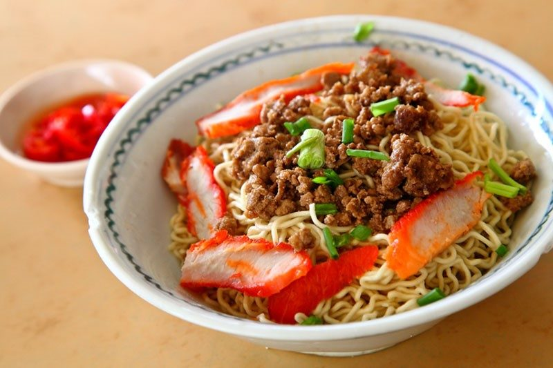
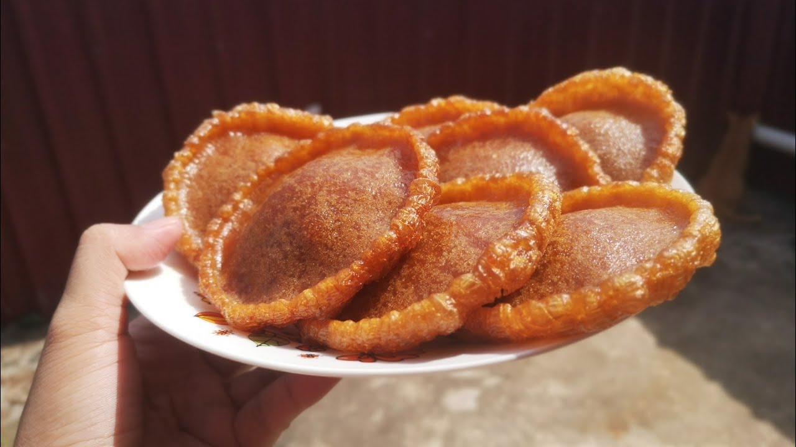
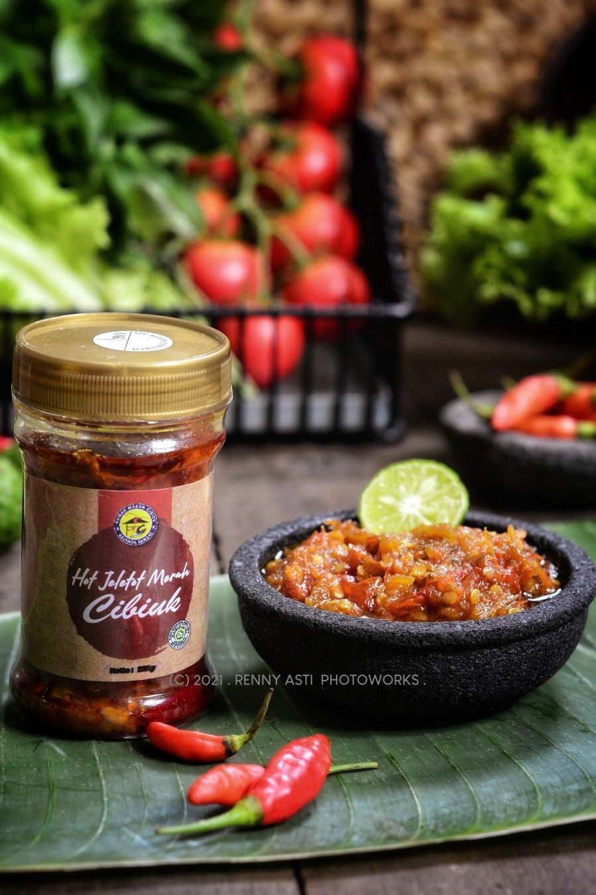

Tradisi
Maan Studio
Koleksi maan tradisi yang segar, asli dan penuh rasa komuniti tempatan.
Temui lauk panas, menu warisan, kuih tradisi dan minuman pilihan yang disediakan oleh peniaga tempatan.
Kenapa pilih maan di JakMiris?
- Rasa autentik Sarawak yang sesuai untuk semua peringkat umur
- Pilihan lauk, snek dan minuman dalam satu tempat
- Menyokong peniaga makanan komuniti setempat
Pilihan
Maan yang paling dicari
Pedas
Sambal Tumis Petai
Sayur
Paku Pakis Belacan
Warisan
Pekasam Ikan Sungai
Lauk
Daun Ubi Masak Lemak
Best Seller
Laksa Sarawak

Mee
Kolo Mee

Kuih
Penyaram
Koleksi Tradisional
Lebih banyak pilihan di bahagian bawah
Snek
Kerepek Pisang
Minuman
Air Roselle
Klasik
Nasi Lemak Kampung
Pencuci Mulut
Kek Lapis Sarawak
Rangup
Kerepek Pisang Original

Sambal
Sambal Tradisi
Lauk
Ikan Salai
Premium